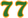

Double Seven
Board Game Arena 官方规则文档
Overview
Double Seven is a game where you make sets from matching tiles (similar to Rummikub), but instead of numbers and colors, you are collecting animal families. Specifically, families of seven. When the game ends, points are tallied from the families each player managed to make, and the first and second players to make a set of seven.
There are 91 tiles in the game: 8 different animal families with 11 tiles each, plus three clover tiles that act as wilds.
Gameplay
Each player starts with three tiles in front of them. One tile is face-up in the center, next to a deck of face-down tiles.
On each turn, players will follow four phases consisting of drawing tiles, swapping tiles, and placing them into families.
1. Draw Tiles
Before the turn starts, if there are no tiles in the face-up area, one is put there.
Take two tiles. You can take either of them from the face-down deck or the face-up tiles in the center.
If you start your turn with an empty rack, take three tiles instead.
Rainbow!: If after you finish drawing (and before placing tiles) you have five or more tiles of all different colors, AND no Jokers, AND none of them are the same color, then you may declare "Rainbow!" If you do this, you can draw an extra tile.
2. Actions
You can perform as many of the actions below as you like in any order:
| Name | Description | Notes |
|---|---|---|
| Start a Family | Place at least two identical animals (or an animal plus a Clover (wild tile) ) in your play area. You may only have one family per animal species. | |
| Expand a Family | Add matching animal tiles (or Clover tiles) | |
| Exchange a Family | Swap one of your families with an opponent's family. | The families must be the same size. After an exchange, you may end up with two families of the same animal type, but these cannot be merged. |
| Snatch a Clover | Replace a Clover tile in any family (including your opponents') with the matching animal from your rack. The Clover tile goes back into your rack. | |
| Two for One | Discard two tiles from your rack to the face-up area to take a tile from either the face-down deck or face-up pile. | You can only do this once per turn. |
Keep in mind: Families cannot be split or merged.
"Seven!" and "Double Seven"
Each time one of your families reaches 7 tiles, a token will be given to you. This is worth one point.
The first player to have two families with seven tiles will receive a

token, worth two points. It also triggers the endgame, where each other player will have one final turn.3. End of Turn
Your turn ends if your rack is empty or you choose to end your actions.
If you have more than five tiles on your rack, one tile will be discarded and removed from the game.
Game End & Scoring
When one player has two families of seven tiles, they receive the token. Then all other players take one final turn. When this is done, each player's points are tallied up.
- Each tile in your families = 1 point
- token = 1 point
- token = 2 points
The player with the most points wins! On a tie, the holder of the token wins.